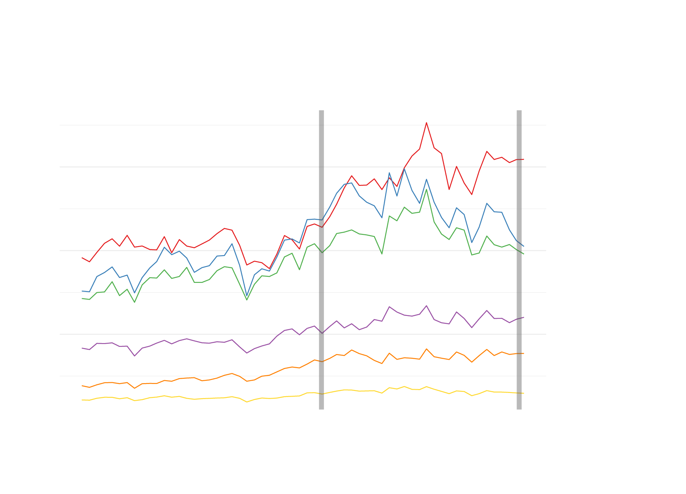
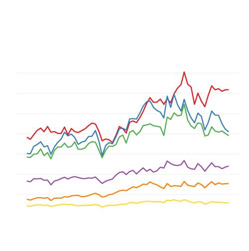
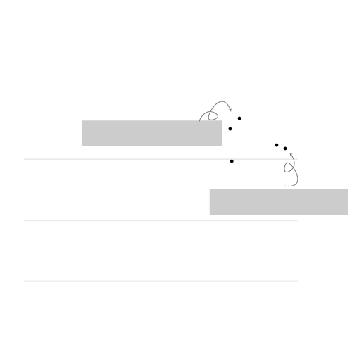

On Feburary 3, 2023, a freight train owned by railway giant Norfolk Southern — one of America's seven Class I freight railroads, which are railroads that make nearly $1 billion or more a year — derailed in East Palenstine, a town of around 4,500 people on the Ohio-Pennsylvania border about 50 miles northwest of Pittsburgh. Fifty-three cars derailed, 11 of them carrying hazardous materials, causing a fire and the chemicals to be released into the air. One of them is vinyl chloride, a colorless, odorless chemical used to make plastic that's cancerous.
The dire aftermath of the crash drew widespread attention and criticism on the industry after it was found that the accident was preventable, if the train crew was alerted earlier that one of the wheels had overheated.
Norfolk Southern's stock steadily rose from about $150 per share to $200 before the pandemic. It recorded an average of 172 derailments, or 1.92 derailments per million miles traveled, in 2018 and 2019.
During the pandemic, like the rest of the stock market, the company's stock price steadliy rose, peaking at $298 per share in Dec 2021. Total number of derailments fell in 2020 and 2021 to an average of 152, but the rate of derailments per million miles traveled rose to 2.14.
Like the rest of the stock market, Norfolk Southern's price has fallen. But the Feb 2023 derailment did little to affect its stock price, falling by only 2.43% the next trading day.
But derailments have been a common occurence among the railroads, with over 1,000 in 2022 alone, or about three a day. Though they pose a huge safety risk on workers and residents who live near rail lines, railways often go under-penalized for their negligence, and so shareholders continue to bet on them.

Not just Norfolk Southern
The average Class 1 railroad stock price rose nearly 50% over five years
despite major derailments and workers raising safety concerns
Norfolk Southern train derailment
and aftermath in East Palestine, OH
BNSF crude oil train derailment
and aftermath in Custer, WA
Price (USD)
350
Berkshire Hathaway
(BNSF parent company)
300
250
200
Norfolk Southern
Union Pacific
150
Canadian National Railway
100
Canadian Pacific Railway
50
CSX
2018-Apr
2018-Oct
2019-Apr
2019-Oct
2020-Apr
2020-Oct
2021-Apr
2021-Oct
2022-Apr
2022-Oct
2023-Apr
Source: Yahoo! Finance
*Kansas City Southern, the seventh Class 1 roadroad, merged with Canadian Pacific Railway in December 2021

250
50
Not just Norfolk Southern
The average Class 1 railroad stock price rose nearly 50% over five
years despite major derailments and workers raising safety concerns
Berkshire Hathaway
(BNSF parent company)
Price (USD)
350
300
Norfolk Southern
250
200
Union Pacific
150
Canadian National Railway
100
Canadian Pacific Railway
50
CSX
2018-Apr
2018-Oct
2019-Apr
2019-Oct
2020-Apr
2020-Oct
2021-Apr
2021-Oct
2022-Apr
2022-Oct
2023-Apr
Source: Yahoo! Finance
*Kansas City Southern, the seventh Class 1 roadroad, merged with Canadian Pacific Railway in December 2021
Under current laws, rail companies face a maximum fine of only $225,455 for each safety breach, when these companies make billions of dollars in profits a year. Transportation secretary Pete Buttigieg said he would call on Congress to raise the fine amount.
Railroads have also been allowed to increase the length of their trains, and cut workers. A 2019 report by the Government Accountability Office found that trains have gotten 25% longer since 2008, with average lengths of 1.2 to 1.4 miles.
Over the past seven years, these Class I companies have slashed their headcount by 29% collectively, or 45,000 employees, with the aim of "lowering their operating ratios and satisfying their shareholders," federal freight rail regulator Surface Transportation Board chairman Martin Oberman said last year. This has led to a “serious deteriorations in rail service.”
The chief culprit is “precision scheduled railroading,” a system that the rail companies used to run as few services as possible on as small a headcount as possible, which has led to train delays and safety issues.
Because the Class 1 railroads are an oligopoly — with four of the seven Class I's owning about 83% to 90% of the freight rail market — customers have no choice but to use them, even if there's a risk their goods will not arrive safely at their destination. Railroad company profits have gone up even though derailments are still happening. And rail workers have few choices in employers.

Derailments did not stop railroads from raking in billions of dollars
in profits
Small federal fines for derailments and an oligopolistic Class 1 railroad industry means railway companies continue to make billions every year even as they risk the safety of workers and people who live near railroads.
How much the six publicly traded Class 1 railroad companies made every year in total, compared to their total annual derailments:
2022
2021
Billions (USD)
In 2018, the same trains derailed 856 times,
or about 2.5 trains a day.
They made nearly $27 billion in profits.
2018
2019
2020
20
In 2018, Class 1 trains derailed 1,049 times,
or nearly three trains a day.
They made nearly $22 billion in profits.
10
Derailments
0
250
500
750
1000
Source: Company financial filings, Federal Railroad Administration

Derailments did not stop railroads from raking in
billions of dollars in profits
Small federal fines for derailments and an oligopolistic Class 1 railroad industry means railway companies continue to make billions every year even as they risk the safety of workers and people who live near railroads.
How much the six publicly traded Class 1 railroad companies made every year in total, compared to their total annual derailments:
2022
2021
Billions (USD)
In 2018, the same trains derailed 856 times,
or about 2.5 trains a day.
They made nearly $27 billion in profits.
2018
2019
2020
20
In 2018, Class 1 trains derailed 1,049 times,
or nearly three trains a day.
They made nearly $22 billion in profits.
10
Derailments
0
250
500
750
1000
Source: Company financial filings, Federal Railroad Administration
Rail workers previously told me that precision scheduled railroading has led to burnout since they're now expected to work longer and more shifts. If a train is delayed, for example, workers' shifts are also delayed. "It ends up coming into town eight hours late. By that time, I’m exhausted,” said Michael Paul Lindsey, an engineer with Union Pacific.
It is also difficult for current workers to run such long trains. Hugh Sawyer, a Norfolk Southern engineer who has been in the industry for 35 years, said that in the late 1980s, there would be five to six workers to a train — an engineer, a conductor, two helpers, a fireman, and a yard worker. Today, there is only the conductor and the engineer.
Methodology: I looked at data on rail accidents from the Federal Railroad Administration, and filtered it just for Class I railroads, and derailments that happened between 2018 and 2022. I also looked at the earnings reports filed by the railroad companies for their profits, and downloaded the monthly closing share price data from Yahoo! Finance.
I also took data on the miles each Class I railroad traveled between 2018 and 2022 to calculate the number of derailments per million miles traveled, since every railroad is of a different size.
I didn't end up using the information, but you can take a look at my analysis on my jupyter notebook scratchpad. I used Pandas to do my analysis, and R/Ggplot to make my charts. To make the radar-like chart, I used Rawgraphs' template and modified it. My next step will be to turn the radar chart into a scrollytelling bit.